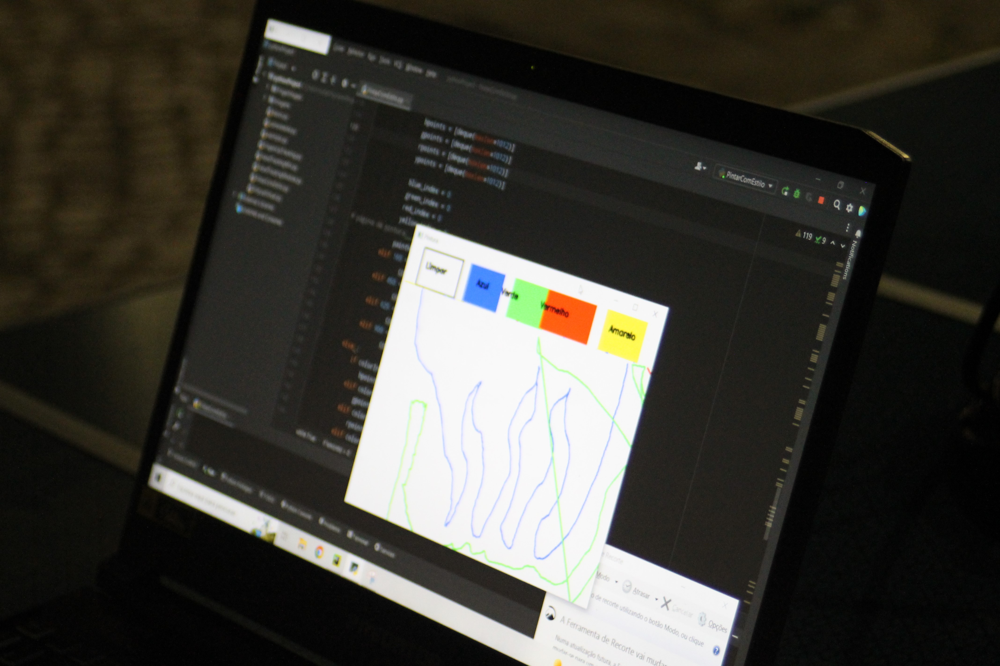
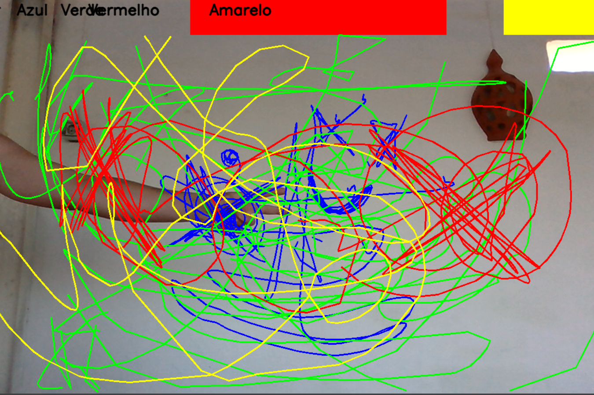
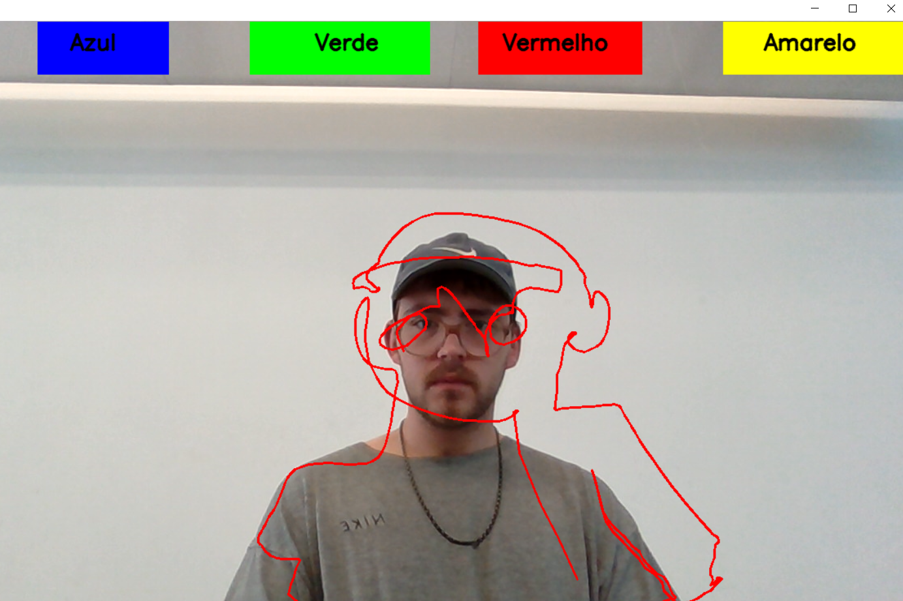
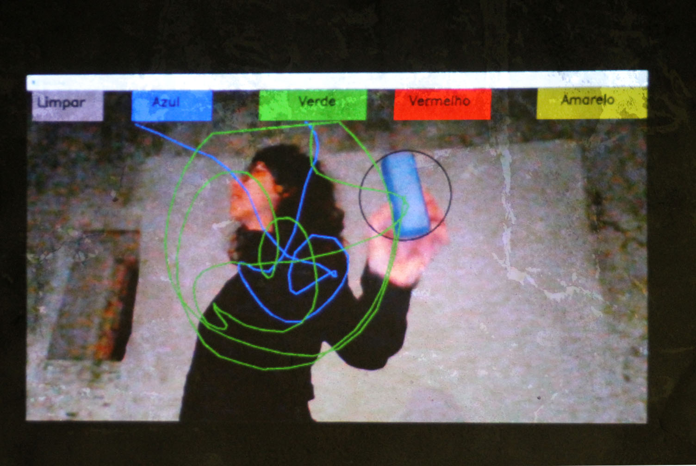

Desenho Experimental
Phyton Experience
Este projeto é criado através da arte de código, consiste em criar uma aplicação de pintura com interação do espectador. Para a criação desta aplicação foi utilizada a linguagem Python, este projeto consiste representar as diversas formas de arte através de código.
A arte em codigo é criada por artistas ligados ás novas tecnologias, que desenvolvem as suas próprias obras de arte através de códigos e as suas próprias aplicações. Algumas das minhas imagens foram tiradas numa exposição que realizei no aniversário da Asociação Mola, realizada no dia 14 de maio de 2022.



